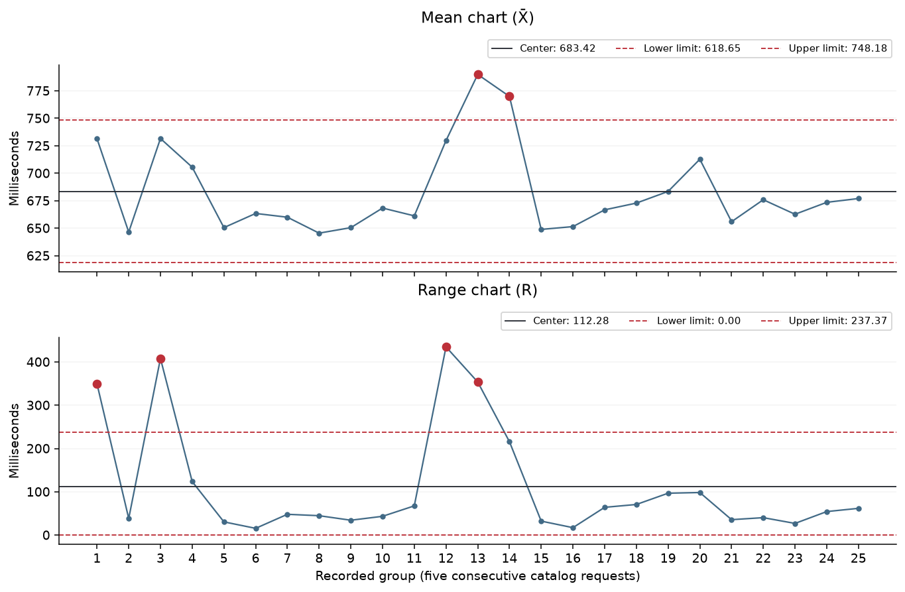
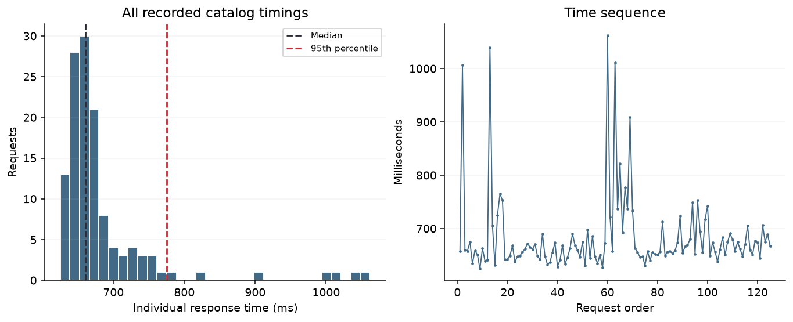
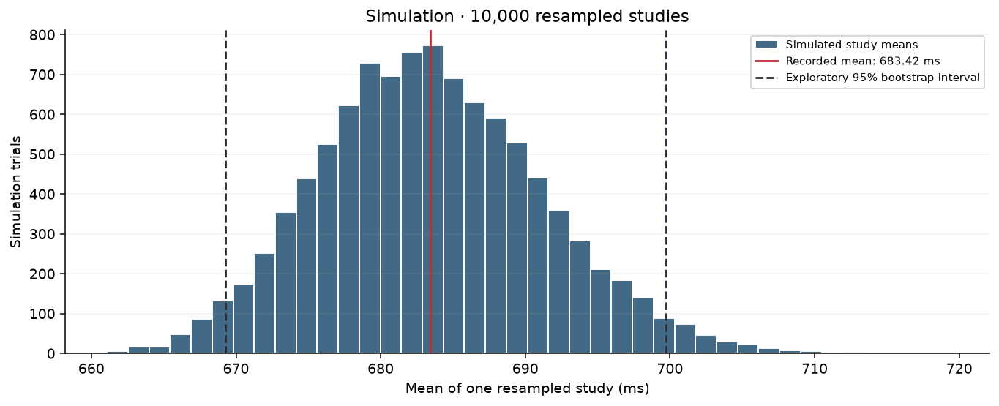

Micro study · ForeverMart quality analysis
ForeverMart · attached PDF study · 7 October 2026
Measured performance
| Statistic | Recorded value |
|---|---|
| Groups × requests | 25 × 5 |
| Median | 660.04 ms |
| 99th percentile | 1,033.05 ms |
| Minimum / maximum | 624.78 / 1,062.31 ms |
| Sample standard deviation | 74.95 ms |
| Tukey outliers (1.5 × IQR) | 14 |
Quality-control calculations
| Chart | Lower limit (ms) | Center (ms) | Upper limit (ms) | Flagged groups |
|---|---|---|---|---|
| Mean (X̄) | 618.65 | 683.42 | 748.18 | 13, 14 |
| Range (R) | 0.00 | 112.28 | 237.37 | 1, 3, 12, 13 |
These are exploratory Phase I charts. Investigate the timing spikes and changing within-group spread before treating this baseline as stable. A chart signal is not a confirmed software defect or an SLA failure.
Comparison with the attached PDF study
Calculations use the original full-precision measurements. The retained study answers are independent of this calculation run; the displayed PDF rounds timings to two decimal places.
| Result | Stored study value | Calculated value | Check |
|---|---|---|---|
| Requests | 125 | 125 | Verified |
| Mean (ms) | 683.418706 | 683.418706 | Verified |
| Median (ms) | 660.037500 | 660.037500 | Verified |
| P95 (ms) | 774.706940 | 774.706940 | Verified |
| P99 (ms) | 1,033.050392 | 1,033.050392 | Verified |
| Tukey outliers | 14 | 14 | Verified |
| Mean-chart flagged groups | 13, 14 | 13, 14 | Verified |
| Range-chart flagged groups | 1, 3, 12, 13 | 1, 3, 12, 13 | Verified |
| Mean chart · lower limit (ms) | 618.653559 | 618.653559 | Verified |
| Mean chart · center (ms) | 683.418706 | 683.418706 | Verified |
| Mean chart · upper limit (ms) | 748.183852 | 748.183852 | Verified |
| Range chart · lower limit (ms) | 0.000000 | 0.000000 | Verified |
| Range chart · center (ms) | 112.283208 | 112.283208 | Verified |
| Range chart · upper limit (ms) | 237.366702 | 237.366702 | Verified |
Complete source comparison: Verified. Raw-file hashes, all micro groups, macro rounds, catalog statistics and UI counts were checked against the retained study files.
Recorded data · mean and range charts

This chart uses recorded data. It is not generated by the random simulation.
Recorded data · latency distribution and sequence

This chart uses recorded data. It is not generated by the random simulation.
Recorded data · catalog exploration

This chart uses recorded data. It is not generated by the random simulation.
Simulation · resampling the recorded groups
For one simulation, Python randomly picks 25 recorded groups, allowing the same group to be picked more than once. Each picked group keeps its original five timings. Python calculates the average of the resulting 125 timings. It repeats this process 10,000 times.
This asks: how much would the study average move if we obtained another selection of groups like the recorded ones? It reuses real observations; it does not send new requests to ForeverMart.
| Simulation result | Value |
|---|---|
| Recorded mean | 683.42 ms |
| Average of simulated study means | 683.50 ms |
| Absolute difference | 0.0833 ms |
| Exploratory 95% bootstrap interval | 669.28–699.71 ms |
| Spread of simulated means (bootstrap SE) | 7.76 ms |
| 99% interval for Monte Carlo mean error | 683.30–683.70 ms |
| Fixed random seed | 20260901 |

The 95% interval describes sensitivity to group selection under the independent-group assumption. The separate 99% Monte Carlo interval describes numerical simulation noise. Serial measurements and unstable variability limit population conclusions. Neither interval establishes a website performance guarantee.
See the first simulated study
Picked group numbers: 15, 20, 20, 6, 17, 11, 2, 11, 2, 15, 11, 12, 19, 13, 8, 18, 7, 19, 5, 8, 17, 15, 8, 18, 18.
Its average: 671.92 ms. The group numbers refer to the recorded input table below.
Simulation · sensitivity of the control limits
| Limit | Recorded (ms) | Average simulated value (ms) | Exploratory 95% interval (ms) |
|---|---|---|---|
| Mean chart · center | 683.42 | 683.50 | 669.28–699.71 |
| Mean chart · lower limit | 618.65 | 618.64 | 598.25–634.61 |
| Mean chart · upper limit | 748.18 | 748.36 | 709.06–794.19 |
| Range chart · center | 112.28 | 112.45 | 66.39–166.91 |
| Range chart · lower limit | 0.00 | 0.00 | 0.00–0.00 |
| Range chart · upper limit | 237.37 | 237.72 | 140.36–352.84 |
Each simulated study recalculates its mean, average range and chart limits using the same book factors. These simulated limits show baseline sensitivity; the recorded-data chart continues to use its original limits.
Catalog snapshot checks
| Check | Recorded result |
|---|---|
| Products / unique IDs | 40 / 40 |
| Categories | Men: 15, Women: 10, Kid: 15 |
| Minimum / maximum listed price | 100.00 / 399.00 |
| Mean / median listed price | 211.75 / 210.00 |
| Field validation issues | 0 |
Checks cover field presence/types, unique IDs, nonnegative prices and nonempty size/image lists. Image URLs were present; every image was not downloaded.
Recorded inputs and method
View all recorded groups · timings in milliseconds
| Group | Time 1 | Time 2 | Time 3 | Time 4 | Time 5 | Mean | Range |
|---|---|---|---|---|---|---|---|
| 1 | 657.428 | 1,006.784 | 659.721 | 658.104 | 675.204 | 731.448 | 349.356 |
| 2 | 634.415 | 659.234 | 650.873 | 624.781 | 663.108 | 646.482 | 38.327 |
| 3 | 639.593 | 641.541 | 1,039.893 | 705.190 | 631.883 | 731.620 | 408.009 |
| 4 | 725.039 | 765.697 | 752.973 | 642.009 | 641.988 | 705.541 | 123.710 |
| 5 | 649.551 | 668.297 | 637.710 | 647.886 | 649.256 | 650.540 | 30.587 |
| 6 | 656.763 | 661.647 | 672.392 | 665.077 | 661.294 | 663.435 | 15.629 |
| 7 | 670.849 | 648.742 | 642.041 | 690.108 | 648.307 | 660.009 | 48.067 |
| 8 | 632.552 | 636.978 | 655.688 | 673.632 | 628.774 | 645.525 | 44.859 |
| 9 | 641.157 | 668.423 | 634.038 | 646.273 | 662.627 | 650.504 | 34.386 |
| 10 | 690.564 | 668.829 | 660.037 | 647.135 | 675.162 | 668.345 | 43.429 |
| 11 | 630.409 | 697.940 | 644.172 | 685.873 | 647.848 | 661.248 | 67.532 |
| 12 | 634.673 | 651.365 | 627.460 | 672.777 | 1,062.308 | 729.717 | 434.848 |
| 13 | 721.543 | 657.687 | 1,011.383 | 736.954 | 821.982 | 789.910 | 353.696 |
| 14 | 693.005 | 776.959 | 736.743 | 908.748 | 734.098 | 769.911 | 215.744 |
| 15 | 663.398 | 655.254 | 647.049 | 647.832 | 631.055 | 648.918 | 32.343 |
| 16 | 657.751 | 640.548 | 656.088 | 651.827 | 651.085 | 651.460 | 17.202 |
| 17 | 656.511 | 713.313 | 649.116 | 656.929 | 657.714 | 666.717 | 64.197 |
| 18 | 653.186 | 658.710 | 674.345 | 723.947 | 654.094 | 672.856 | 70.761 |
| 19 | 666.298 | 669.279 | 680.204 | 749.124 | 652.336 | 683.448 | 96.788 |
| 20 | 753.524 | 694.800 | 655.153 | 717.991 | 742.331 | 712.760 | 98.371 |
| 21 | 649.247 | 673.941 | 656.967 | 638.254 | 661.136 | 655.909 | 35.687 |
| 22 | 683.741 | 650.756 | 674.974 | 691.079 | 678.998 | 675.910 | 40.322 |
| 23 | 657.848 | 674.715 | 662.200 | 647.709 | 670.995 | 662.694 | 27.006 |
| 24 | 705.407 | 659.772 | 651.025 | 677.723 | 673.805 | 673.546 | 54.381 |
| 25 | 645.202 | 707.045 | 675.671 | 689.519 | 667.639 | 677.015 | 61.843 |
Calculation formulas
Group mean = sum of its five timings / 5; group range = maximum − minimum.
X̄ limits = grand mean ± 3 × average range / (2.326 × √5).R limits = 0 and 2.114 × average range.
p̄ = total failed / total checks; p limits = p̄ ± 3√[p̄(1−p̄)/5], clipped to 0–1.
Percentiles use NumPy’s linear interpolation; standard deviation uses the sample denominator (n−1). The n=5 chart factors match the attached study and Levin/Rubin’s book, including D4 = 2.114. All display rounding happens after calculation.
ForeverMart · attached PDF study · 7 October 2026. No textbook-answer comparison is made for website measurements. Identical data, settings and seed reproduce the simulation; changing the seed changes random draws, not the recorded calculations.
Tools: Python, NumPy, SciPy and Matplotlib. References: original attached report.pdf and retained study evidence; Levin/Rubin, Statistics for Management, Chapter 10 / Appendix Table 9; NIST mean/range chart guidance; SciPy bootstrap method documentation.